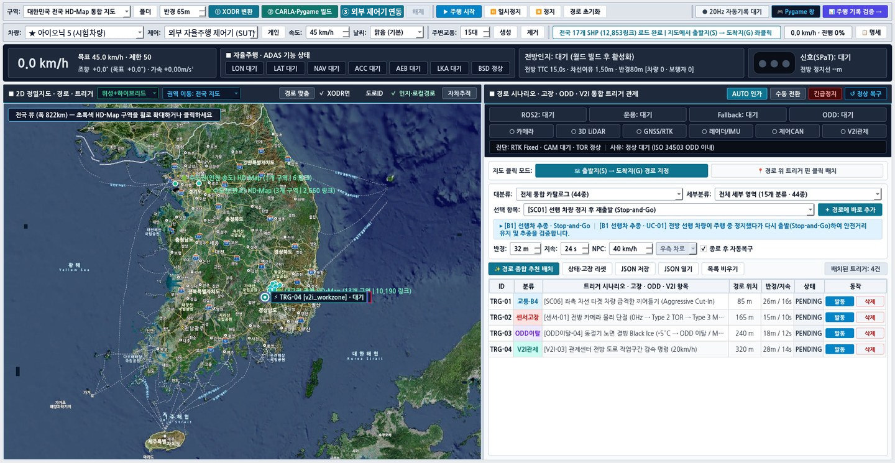
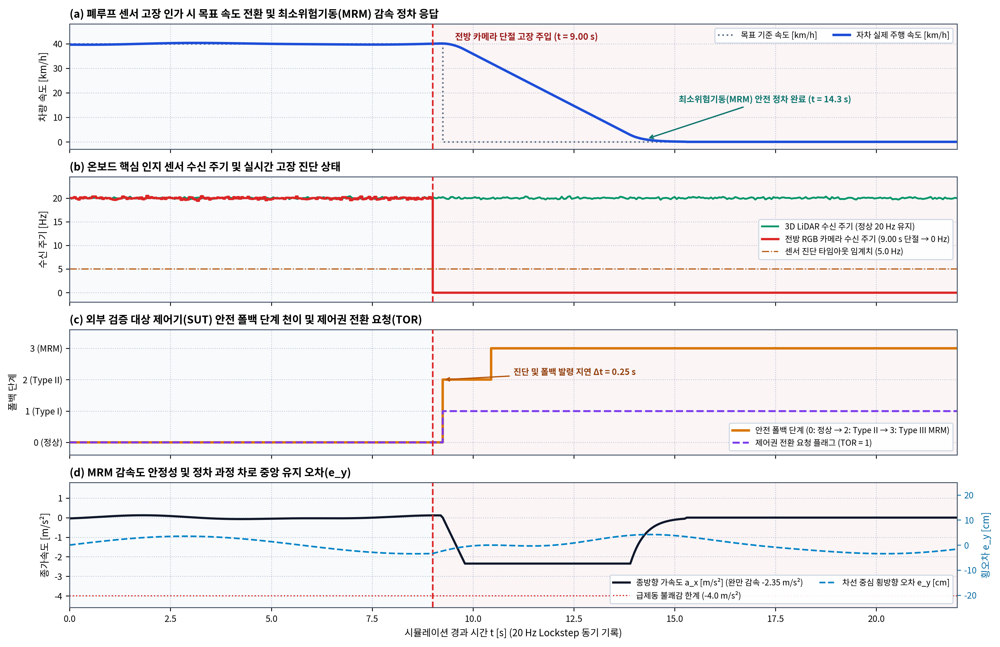

위험 시나리오 · 센서 고장 · 기상 ODD 시험 및 AI 설계 가이드
내장된 45종 시험 항목(동적 교통 상황, ISO 26262 센서·제어 고장, ISO 34503 기상·노면 ODD 이탈, 인프라 협동제어)의 발동·해제 조건 및 가변 역학 설정 방법과 대화형 AI 시나리오 배치 기능을 설명합니다.
1. 시나리오 · 고장 · ODD 트리거 설정 절차
Tab 2 우측의 [1. 시나리오 · 고장 · ODD 설정] 탭에서는 경로상에 하나 이상의 이벤트 트리거를 등록하여 주행 중 자동 발동시킬 수 있습니다. 모든 트리거는 대기(PENDING) → 접근 준비(ARMED) → 발동(ACTIVE) → 종료(DONE) 상태 순서로 동작합니다.
- 항목 선택 및 배치: 분류 탭(
동적 시나리오/센서·제어 고장/기상·노면 ODD/인프라·DB)에서 항목을 고른 뒤,[추천 자동배치](경로 내 다차선 직선·교차로 기하에 맞춰 자동 배치)를 누르거나 지도 클릭 모드2. 트리거 지점 지정에서 원하는 도로 위치를 클릭합니다. - 발동 조건 및 상황 해제 설정:
발동 조건:지점 반경 진입 시,목표 속도 도달 시,지점+속도 동시 충족 시중 선택합니다.상황해제: 시나리오 과정 종료 후 해제,유지시간 경과 후 해제(일시적 고장·기상 악화 후 정상 복귀 확인용), 주행 종료 시까지 유지 중 선택합니다.
- 동적 시나리오 역학 조정: 끼어들기·합류·차선변경 항목은
목표 TTC(초),초기 간격(m),횡이동 시간(초),좌측/우측 진입 차로,진입 후 급감속 연계여부를 개별 지정할 수 있습니다. - 프리셋 저장·불러오기: 하단
[시나리오 저장]/[불러오기]로 트리거 조합을 파일로 저장해 반복 시험에 사용합니다.

그림 1. 시나리오 · 고장 · ODD 설정 패널 — 발동 조건, 해제 조건 및 목표 TTC·초기 간격·진입 차로 역학 파라미터 설정.

그림 2. 폐루프 센서 고장 인가 및 안전 폴백 시계열 검증 예시 — 전방 카메라 단절(0 Hz) 발생 시 진단 지연(0.25 s), 제어권 전환 요청(TOR) 및 최소위험기동(MRM) 안전 정차 거동.
2. 대화형 AI 시나리오 설계창 활용
우측 상단 [AI 시나리오 설계 대화창](모델·키 설정은 [API 설정])을 열면, 현재 설정된 주행 경로의 차선 수·직선 구간 길이·교차로 위치를 참조하여 자연어 입력을 트리거 설정으로 변환해 줍니다. 예를 들어 목표 속도 도달 후 끼어들기 방향과 TTC, 전방 교차로 고장 항목을 문장으로 입력하면 적합 좌표를 계산해 지도와 트리거 목록에 추가합니다.
3. 내장 시나리오 · 고장 · ODD · V2I 전체 목록 (45종)
| 코드 | 영역 | 항목 명칭 | 기본 반경 / 유지시간 | 시험 내용 |
|---|---|---|---|---|
sc1 | 교통·B1 | [SC01] 선행차 정지 후 재출발 (Stop-and-Go) | 32 m / 24 s | [B1 선행차 추종 · UC-01] 전방 선행 차량이 주행 중 정지했다가 다시 출발(Stop-and-Go)하여 안전거리 유지 및 추종을 검증합니다. |
sc2 | 교통·B2 | [SC02] 인접 차선(좌·우) 차량 사이 차선변경 | 28 m / 20 s | [B2 차선변경 · UC-02] 인접 차선(좌·우 선택 가능) 전방과 후방에 차량이 주행 중일 때 자차가 안전 간격으로 차선변경하는 상황을 검증합니다. |
sc3 | 교통·B2 | [SC03] 합류·인접 차선(좌·우) 접근차 대응 합류 (Merge) | 28 m / 18 s | [B2 합류부 차선변경 · UC-03] 합류·인접 차선(좌·우 선택 가능)에서 접근하는 차량에 대응해 자차의 안전한 합류·차간거리 조절을 검증합니다. |
sc4 | 교통·B3 | [SC04] 신호교차로 좌회전 시 대향 직진차 양보 | 28 m / 20 s | [B3 신호교차로 좌회전 · UC-04] 좌회전 신호 시 황색불에 감속하지 않고 직진 통과하는 반대편 차량을 대기한 후 안전하게 좌회전합니다. |
sc5 | 교통·B3 | [SC05] 신호교차로 우회전 시 횡단보도 보행자 보호 | 24 m / 18 s | [B3 신호교차로 우회전 · UC-05] 신호 교차로 우회전 진입 중 횡단보도를 건너는 보행자를 위해 일시정지 후 우회전합니다. |
sc6 | 교통·B4 | [SC06] 인접 차선(좌·우) 차량 급끼어들기 (Cut-In) | 26 m / 16 s | [B4 급격한 끼어들기 · UC-06] 인접 차선(좌·우 선택 가능)에서 타겟 차량이 짧은 거리·시간 내에 급격하게 자차 전방으로 끼어드는 시나리오입니다. |
sc7 | 교통·B4 | [SC07] 인접 차선(좌·우) 차량 일반 끼어들기 | 26 m / 18 s | [B4 인접차 끼어들기 · UC-06] 인접 차선(좌·우 선택 가능)에서 타겟 차량이 방향지시등 점등 후 자차 주행 차선으로 끼어드는 시나리오입니다. |
sc8 | 교통·B4 | [SC08] 도로변(좌·우) 정차 차량 사이 저속 진입 대응 | 26 m / 18 s | [B4 정차차 사이 진입 · UC-12] 도로변(좌·우 선택 가능)에 정차된 차량들 사이 사각지대에서 타겟 차량이 자차 주행 차선으로 느리게 진입합니다. |
sc9 | 교통·B4 | [SC09] 인접 차선(좌·우) 진입 취소 · 편향회피 | 28 m / 18 s | [B4 차선 내 편향회피 · UC-07] 인접 차선(좌·우 선택 가능) 차량이 진입을 시도하다 취소하고, 자차는 반대편으로 편향 회피 후 복귀합니다. |
sc10 | 교통·B4 | [SC10] 대향차 중앙선 침범 · 우측 편향회피 | 34 m / 16 s | [B4 중앙선 침범 회피 · UC-07] 중앙선을 물고 넘어오는 반대편 차선 대향 차량에 대응해 차선 내 우측으로 붙어 안전 주행합니다. |
sc11 | 교통·B5 | [SC11] 정차차 뒤 사각지대 보행자 무단횡단 | 22 m / 16 s | [B5 무단횡단 보행자 · UC-08] 갓길 정차 차량 뒤에 가려져 있던 보행자가 무단횡단하여 Ego 정지 후 보행자 통과 뒤 재출발합니다. |
sc12 | 교통·B6 | [SC12] 황색 신호 딜레마존 통과·정지 판단 | 24 m / 16 s | [B6 황색 딜레마존 · UC-09] 교차로 진입 직전 신호등이 황색으로 전이될 때 급제동 위험 없이 안전하게 통과/정지 판단을 수행합니다. |
sc13 | 교통·B4 | [SC13] 정류장 정차 버스 차선 근접·감속 통과 | 28 m / 22 s | [B4 정류장 버스 근접통과 · UC-14] 전방 버스가 정류장 정차를 위해 차선변경했으나 Ego 차선과 근접·걸쳐 있어 감속하여 주의 통과합니다. |
sc14 | 교통·B7 | [SC14] 보행자·정차차 혼재 협소구간 감속 통과 | 38 m / 25 s | [B7 보행자·정차차 협소구간 · UC-10] 도로 위에 보행자들과 사고/경찰 정차 차량들이 혼재해 감속하며 안전 간격으로 통과합니다. |
sc15 | 교통·B4 | [SC15] 정차 버스 차로 차단 · 차선변경 회피 | 28 m / 22 s | [B4 정차 버스 차선변경 · UC-11] 전방 버스가 정류장 부근에서 자차 주행 차로를 막고 정차하여 인접 차선으로 차선변경 회피합니다. |
sc16 | 교통·B3 | [SC16] 비신호 교차로 횡단보도 보행자 대기 통과 | 24 m / 18 s | [B3 비신호 횡단보도 · UC-13] 비신호 교차로에서 보행자가 횡단보도를 완전히 건널 때까지 일시정지 대기한 후 통과합니다. |
sc17 | 교통·B3 | [SC17] 비신호 교차로 전방 좌회전차 양보 직진 | 30 m / 20 s | [B3 비신호 교차로 직진 · UC-13] 비신호 교차로에서 전방 좌회전 차량이 먼저 진입해 감속 양보한 뒤 타겟 통과 후 직진합니다. |
sc18 | 교통·B3 | [SC18] 비신호 교차로 좌측 직진차 대기 후 좌회전 | 30 m / 20 s | [B3 비신호 교차로 좌회전 · UC-13] 비신호 교차로에서 좌회전 진입 시 좌측에서 달려오는 직진 차량을 정지/감속 대기한 후 좌회전합니다. |
sc19 | 교통·B3 | [SC19] 교차로 우회전 직후 전방 유턴차 감속 대응 | 28 m / 20 s | [B3 우회전 후 유턴차 · UC-13] 교차로 우회전 직후 전방 중앙선 단절부에서 유턴 진입하는 차량을 인지하여 감속 대응합니다. |
sc20 | 교통·B3 | [SC20] 신호 우회전 시 좌측 직진 차량군 양보 | 28 m / 20 s | [B3 신호교차로 우회전 · UC-13] 신호 교차로 우회전 접근 시 좌측 교차로에서 직진 차량들이 연속 통과할 때까지 정차 대기 후 우회전합니다. |
emerg_ambulance_yield | 긴급·구급차 | [긴급-01] 구급차 긴급출동 추월·진로양보 대응 | 28 m / 20 s | [B8 긴급차량 양보 · UC-15] 경광등을 점등한 구급차가 인접 차선(좌·우 선택 가능)에서 긴급출동하며 자차 전방 차선으로 진입·통과할 때 감속 양보 및 안전거리 확보를 검증합니다. |
emerg_firetruck_incident | 긴급·소방차 | [긴급-02] 소방차·구급차 화재/사고 현장 통제 대응 | 36 m / 24 s | [B8 긴급현장 통제 · UC-16] 전방 차로 및 갓길에 경광등·비상등을 켠 소방차와 구급차가 출동 정차하여 현장을 통제할 때 자차의 감속·차선변경 회피 또는 안전 정지를 검증합니다. |
fault_cam_stop | ISO 26262 고장 | [센서-01] 전방 카메라 단절 (0Hz → MRM) | 15 m / 10 s | [인지 센서 결함] 트리거 지점 통과 시 CARLA 전방 카메라를 물리 중단(0Hz)하여 0.5s 후 Type 2 TOR, 5.0s 후 Type 3 MRM 정지를 검증합니다. |
fault_single_lidar | ISO 26262 고장 | [센서-02] 좌측 3D LiDAR 고장 (0x20 → TOR) | 15 m / 8 s | [인지 센서 결함] 좌측 3D LiDAR 채널 고장 비트(0x20)를 주입하여 Type 2 운전 제어권 전환 요청(TOR) 발생을 검증합니다. |
fault_lidar_right | ISO 26262 고장 | [센서-03] 우측 3D LiDAR 고장 (0x40 → TOR) | 15 m / 8 s | [인지 센서 결함] 우측 3D LiDAR 채널 고장 비트(0x40)를 주입하여 단일 센서 열화 시 Type 2 TOR 발동을 검증합니다. |
fault_dual_lidar | ISO 26262 고장 | [센서-04] 듀얼 LiDAR 동시 단절 (0x60 → MRM) | 15 m / 6 s | [인지 센서 치명 결함] 좌/우 3D LiDAR 포인트클라우드를 동시 차단(0x60)하여 즉시 Type 3 최소위험기동(MRM) 정지를 검증합니다. |
fault_radar | ISO 26262 고장 | [센서-05] 전방 레이더 고장 (0x04 → TOR) | 15 m / 8 s | [인지 센서 결함] 전방 밀리미터파 레이더 고장(0x04)을 주입하여 ACC/AEB 전방 거리 계측 열화 및 제어권 전환(TOR)을 검증합니다. |
fault_gnss_multipath | ISO 26262 고장 | [측위-01] GNSS 멀티패스 점프 (+12m → MRM) | 15 m / 6 s | [측위 치명 결함] GNSS/Odometry에 +12m 멀티패스 스텝 위치 점프를 주입하여 차선 이탈 방지용 즉시 Type 3 긴급 정차를 검증합니다. |
fault_rtk_float | ISO 26262 고장 | [측위-02] GNSS RTK Float 정밀도 저하 | 18 m / 10 s | [측위 정밀도 열화] 고정밀 RTK Fixed 상태에서 RTK Float 모드로 전이시켜 측위 불확실성 증가 시 감속·주의 제어를 검증합니다. |
fault_rtk_nofix | ISO 26262 고장 | [측위-03] GNSS RTK NoFix 상실 (MRM) | 16 m / 8 s | [측위 상실 결함] 터널·협곡 구간 등에서 RTK 보정신호 및 위성 해가 상실(NoFix)될 때 안전 정지/전환 동작을 검증합니다. |
fault_imu | ISO 26262 고장 | [측위-04] IMU 관성센서 고장 (0x80 → TOR) | 15 m / 8 s | [관성 센서 결함] 차량 IMU 고장 비트(0x80)를 주입하여 각속도·가속도 피드백 이상 시 안전노드 진단 및 TOR 전이를 검증합니다. |
fault_can_drop | ISO 26262 고장 | [제어-01] 제어기 CAN 두절 (0x08 → MRM) | 15 m / 6 s | [제어기 치명 결함] 차량 구동·제동·조향 하위 제어기 CAN 하트비트(0x371) 두절을 주입하여 즉시 Type 3 비상 제동을 검증합니다. |
odd_light_rain | ISO 34503 ODD | [ODD주의-01] 약한 비·젖은 노면 (5mm/h) | 20 m / 14 s | [ISO 34503 ODD 경계] CARLA 강우 효과와 강수량 5mm/h·젖은 노면 상태를 주입하여 ODD 내 감속·주의 주행 유지를 검증합니다. |
odd_strong_wind | ISO 34503 ODD | [ODD주의-02] 강풍 횡풍 구간 (12m/s) | 20 m / 14 s | [ISO 34503 ODD 경계] 교량·개활지 강풍(12m/s) 환경 조건을 주입하여 횡방향 차선 유지 안정성 및 주의 상태 진단을 검증합니다. |
odd_light_fog | ISO 34503 ODD | [ODD주의-03] 옅은 안개 구간 (시정 180m) | 20 m / 14 s | [ISO 34503 ODD 경계] 가시거리 180m 안개 구간 진입을 모사하여 원거리 인지 제한 상황에서의 감속 주행을 검증합니다. |
odd_heavy_rain | ISO 34503 ODD | [ODD이탈-01] 폭우 집중호우 (55mm/h → TOR) | 18 m / 12 s | [ISO 34503 ODD 이탈] CARLA 3D 폭우 기상과 강수량 55mm/h를 동시 주입하여 ODD 이탈 판정 및 Type 2 제어권 전환(TOR)을 검증합니다. |
odd_gust_wind | ISO 34503 ODD | [ODD이탈-02] 태풍급 돌풍 (18m/s → TOR) | 18 m / 12 s | [ISO 34503 ODD 이탈] 설계운행영역 한계를 초과하는 돌풍(18m/s) 조건을 주입하여 ODD 이탈 및 안전 감속/TOR을 검증합니다. |
odd_dense_fog | ISO 34503 ODD | [ODD이탈-03] 짙은 안개 (시정 45m → TOR) | 18 m / 12 s | [ISO 34503 ODD 이탈] CARLA 3D 농무 기상과 가시거리 45m를 주입하여 시정 불량 ODD 이탈 및 제어권 전환을 검증합니다. |
odd_black_ice | ISO 34503 ODD | [ODD이탈-04] 노면 결빙 (-5°C → MRM) | 18 m / 12 s | [ISO 34503 ODD 이탈] 노면 온도 -5°C 결빙(surface=3) 조건을 주입하여 마찰계수 급감 구간의 ODD 이탈 및 안전 정지를 검증합니다. |
v2i_scen1 | V2I · DB재현 | [인프라-01] 인프라 사각지대 보행자 협조 감속 | 28 m / 14 s | [C-ITS 인프라 협조] 인프라가 전방 사각지대 횡단 보행자를 사전 감지하여 ControlCenterCommand(COOPERATE, 5km/h)를 송출합니다. |
v2i_scen2 | V2I · DB재현 | [인프라-02] 인프라 비보호 좌회전 협조 정지 | 30 m / 15 s | [C-ITS 인프라 협조] 인프라가 대향 고속 접근 차량을 감지하여 ControlCenterCommand(COOPERATE, 0km/h 일시정지)를 송출합니다. |
v2i_workzone | V2I · DB재현 | [V2I-03] 관제센터 작업구간 감속 (20km/h) | 28 m / 14 s | [관제센터 속도제한] 전방 도로 공사·작업구간 접근 시 관제센터가 20km/h 감속 명령(/control_center/command)을 하달합니다. |
v2i_emergency_stop | V2I · DB재현 | [V2I-04] 관제센터 유고·사고 긴급 정지 | 25 m / 10 s | [관제센터 긴급제어] 전방 차로 유고·사고 발생 시 관제센터가 즉시 정지(0km/h, action=3) 명령을 송출하여 정차 응답을 검증합니다. |
v2i_rsu_drop | V2I · DB재현 | [인프라-05] 인프라 · 관제 무선통신 단절 | 18 m / 10 s | [V2X 통신 이상] 인프라 및 관제센터 하트비트 연결(cc_connected=False)을 차단하여 단독 자율주행 폴백 전환을 검증합니다. |
db_replay | V2I · DB재현 | [DB재현] 실도로 수집 DB 위험 이벤트 실측 재현 | 26 m / 12 s | [Log-to-Sim] 실도로 수집 DB에서 식별된 위험 이벤트(EV) 당시 주변 차량·보행자 실측 궤적을 그대로 스폰·재현합니다. |